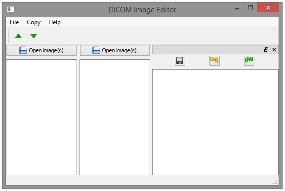

Welcome to DIE Home Page
This software is a DICOM editor. As you can see in screenshot above, it's in first steps of development, so we dont have an working version, yet! But the thing already has a face! :)
Some features, planned (so far) are:
- Clone DICOM header;
- Edit specific tags on header;
It will not permit you change the image inside a DICOM file .
Thank you!
This project would not be possible without some amazing projects:
Generating correct resource file
Just type:
$ pyrcc4 -o mainwindow_qrc.py resource.qrc -py3